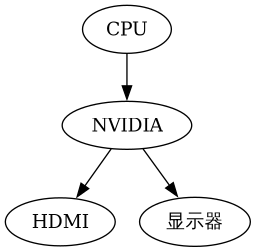
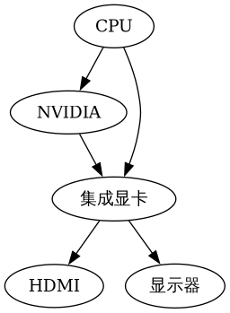
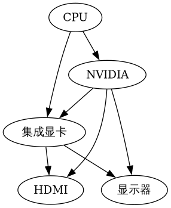

显卡直通
Table of Contents
为什么要这么做？
我平常浏览网页、写代码等操作都在 Arch Linux 系统下完成，很少使用 Windows 双系统。但是有的时候我想和同学联机游戏，就不得不重启到 Windows 系统。
虽然已经有了 Wine、Proton 兼容层来运行 Windows 应用，还有 DXVK 来转译 DirectX 命令到 Vulkan 来提升性能 但是还是有很多游戏无法在 Wine 环境下正常运行，例如自带 DRM 或者反作弊保护的游戏，以及调用了奇怪 API 的游戏
但双系统意味着需要维护两套系统，包括分别的系统更新、数据的共享和同步等等
例如我为了在 Windows 下正常访问自己的文件，不得不开了台 Hyper-V 虚拟机装上 Linux 然后把 Linux ZFS 分区所在的硬盘直通进去，再用 Samba 共享出来 内存立减 1G，而且启动还慢，进桌面后过两三分钟网络驱动器才连接上
而传统的虚拟机软件（QEMU，VirtualBox，VMware）等的 3D 图形性能都很差：
- QEMU：3D 加速是什么？
- 指只支持 2D 加速的 QXL
- 有 Virtio-GPU 这个支持 3D 的尝试，但功能不完整且不支持 Windows
- VirtualBox：3D 加速聊胜于无
- 支持一点 DirectX，但是还是不完整
- VirtualBox 的 2D 图形绘制也会时常出错
- VirtualBox 有时会卡死（与 ZFS 的兼容性问题？）
- VMware：3D 加速（相对）最好的一个
- 还是不够用
- 闭源+收费
另一种常用的方法是使用虚拟机软件的 PCIe 直通 功能，让虚拟机独占高性能显卡，直接加载显卡对应的驱动，和显卡直接通信：
- 这种方法需要 CPU 支持 VT-d 技术（Intel）或者 AMD-Vi（AMD），但近几年的 CPU 应该都支持
- 同时需要至少两张显卡（集显/核显也算在内）因为高性能独显被虚拟机占走了，如果没有第二张显卡，宿主系统就没有地方显示信息了
- 同时需要一个支持 PCIe 直通的虚拟机软件
- VirtualBox 和 VMware Workstation 据我所知是不行的
- VMware ESXi（一个专门用于虚拟化的操作系统）是可以的
- 对于个人用户免费，而且有非常方便的网页界面
- 缺点是闭源，挑网卡驱动，而且占用资源有点大（比如内存）
- Proxmox VE 也支持
- 一个基于 Debian 的、专门针对虚拟化的系统
- 系统本身免费开源，技术支持收费
- 基于 QEMU
- 或者你在自己的 Linux 上装个 QEMU 也可以
- QEMU：免费，开源，神
- QEMU 启动要输一长串命令，但可以用 Libvirt 及 Virt-Manager 进行方便的管理
Nvidia显卡
但是对于 NVIDIA 显卡和笔记本平台来说，事情又要麻烦一些：
NVIDIA 的驱动在虚拟机中会拒绝加载 NVIDIA 不想让你买了几千块钱的民用卡就在虚拟机里用，他们希望你去买上万的 GRID 虚拟化专用卡 因此需要用一大堆神奇的操作来隐藏 “这是个虚拟机” 的事实，让 NVIDIA 驱动乖乖启动
另外笔记本电脑上的 NVIDIA 显卡和台式机上的是不一样的,不止是指性能，在整体架构上也有区别。在台式机上，显卡的连接方式是这样的：

也就是显卡只连接 CPU 和显示器，不关心其它的东西
但在笔记本上又有不同，而且不同的笔记本电脑也是有区别的
NVIDIA Optimus 的 MUXless
如果买的是几千元的中低端游戏本，连接方式可能是这样的：

区别在于，独显不直连显示器，而是将渲染好的画面传输给核显，让核显发给显示器。这种方案称为 NVIDIA Optimus 的 MUXless 结构 ：
- 优点：
- 省电（独显不用时可以直接关闭）
- 省钱（相比另外几种方案）
- 缺点：
- 游戏画面渲染延迟大（因为独显需要额外一步传输画面到核显）
- 显卡直通时会遇到严重的技术难题：
- Windows 优先把游戏放在当前显示器对应的显卡上运行，由于独显没有连接显示器，因此游戏不会优先使用独显，而是根据虚拟机配置，使用低性能虚拟显卡（例如 QXL）或者使用 Intel 的 GVT-g 虚拟显卡（核显级性能）
在 Intel + NVIDIA Optimus 的组合中，NVIDIA 的驱动会负责把游戏调到独显上渲染。但是 NVIDIA 驱动不承认 Intel GVT-g 虚拟显卡可以加入这个组合，就不会启动 Optimus
也就是，除非游戏主动检测并调用独显，否则游戏会在核显上运行
NVIDIA Optimus 的 MUXed
如果买的是一万元左右的中高端游戏本，连接方式可能是这样的：

与上一种方案的区别在于，电脑主板的电路上加入了开关，可以设置 HDMI 接口及显示器分别由核显或独显进行管理。这种方案也是 NVIDIA Optimus 的一种，称为 MUXed 结构 ：
- 优点：
- 省电（独显不用时可以关闭）
- 游戏渲染延迟小（只要将显示器切到独显上即可）
显卡直通更方便
例如，可以把独显切给 HDMI 接口，再在淘宝上 5 块钱买一个 HDMI 欺骗器（假显示器），这样虚拟机里的游戏就都会调用独显了 再用远程桌面等软件查看独显画面
- 缺点：贵（电路复杂）
游戏本
如果买的是几万块钱的 "后浪专用" 厚砖游戏本，连接方式可能是这样的：
你问核显哪去了？你都买几万块钱的电脑玩游戏，还要核显有什么用？
这种方案下，厂商直接硬件切断了核显的供电，以将供电全部分配给 CPU 和独显，取得更好的性能。实际上和台式机的架构没什么区别：
- 优点：
- 高性能，游戏渲染延迟小（独显直通显示器，核显不会和 CPU 和独显抢电）
- 省钱（没有复杂的切换电路）
缺点：
- 费电（独显需要一直开着）
但你买几万块钱的游戏本估计也不关心续航了
对显卡直通的毁灭性打击
- 因为只有一块显卡，一旦直通进虚拟机，主系统就没有显卡可用了
如果你要坚持进行直通，你需要自己编写显卡在虚拟机和主机之间切换的脚本，并且需要准备一种方法在失去显示的时候进行调试 艺高人胆大的可以上!
如何判断电脑是哪一种结构
在电脑的 Linux 系统中运行 lspci，查找有关 Intel HD Graphics 和 NVIDIA 的设备：
- 如果独显设备名以 3D Controller 开头，那你的电脑就是第一种 Optimus muxless 架构（核显直连显示器）
- 如果独显设备名以 VGA Controller 开头，并且有一个 HD Graphics 核显，那你的电脑是第二种 Optimus muxed 架构（核显、独显切换）
- 如果独显设备名以 VGA Controller 开头，并且没有 HD Graphics 核显，那你的电脑是第三种屏蔽核显的架构
OPtimus Muxless 直通
系统环境
我使用的电脑及系统环境如下：
- 联想拯救者 R720-15IKBN 笔记本电脑（i7-7700HQ，GTX 1050）
- 属于第一种的 Optimus MUXless 架构，核显直连显示器
- 宿主系统使用 Arch Linux，并更新到写本文时的最新版本
- 虚拟机软件使用 QEMU，并且安装 Libvirt 及 Virt-Manager 进行图形化管理
- 虚拟机内使用 Windows 10 LTSC 2019
目标如下：
- 创建一个 Intel 的 GVT-g 虚拟核显，将其直通进虚拟机
- 因为是虚拟显卡，宿主系统仍可正常显示图像
- 在宿主系统上禁用 NVIDIA 独显，将其完全交由虚拟机管理
开始以下步骤前，需要准备这些东西：
- 一个装好 Windows 10 系统的 QEMU（Libvirt）虚拟机
- 使用 UEFI（OVMF）启动，用 BIOS 方式（SeaBIOS）不一定能成功
- 配置有 QXL 虚拟显卡
- 一个能在宿主机上启动的 Windows 系统，只要能打开设备管理器即可
- 可以是双系统，Windows To Go 等
- Windows PE 或许也可以
- 宿主机使用 Intel 核显显示内容，独显要么被禁用，要么驱动被卸载
- 否则无法完成直通 GVT-g 虚拟显卡（Virt-Manager 会闪退）
- 也无法完成直通独显（因为独显被宿主系统占用了）
重要的提示：
- 整个步骤中会多次重启宿主系统，同时一些操作可能导致宿主系统崩溃，请备份好数据
- 整个步骤中不需要手动下载任何显卡驱动，交给 Windows 自动下载就好
- 如果 Windows 自动下载失败，手动安装驱动的底线是下载驱动 EXE 然后双击安装
- 千万不要在设备管理器中手动指定设备安装
- 手动安装显卡驱动有时反而会干扰判断
禁止宿主系统管理 NVIDIA 独显
宿主系统上的 NVIDIA 的驱动会占用独显，阻止虚拟机调用它，因此需要先用 PCIe 直通用的 vfio-pci 驱动 替换掉它
即使你不需要直通独显，你仍然需要一种方法把宿主系统的图形显示调整到核显上，否则后续直通核显时 Virt-Manager 会崩溃 你可以用这里的方法禁用 NVIDIA 驱动，或者使用 optimus-manager 等软件进行管理
禁用 NVIDIA 驱动，把独显交给处理虚拟机 PCIe 直通的内核模块管理的步骤如下：
运行 lspci -nn | grep NVIDIA ，获得类似如下输出：
$ lspci -nn | grep NVIDIA 01:00.0 3D controller [0302]: NVIDIA Corporation GP107M [GeForce GTX 1050 Mobile] [10de:1c8d] (rev a1)
这里的 [10de:1c8d] 就是独显的制造商 ID 和设备 ID 其中 10de 代表这个 PCIe 设备由 NVIDIA 生产，而 1c8d 代表这是张 1050
创建 /etc/modprobe.d/nvidia.conf ，添加如下内容：
options vfio-pci ids=10de:1c8d给 vfio-pci 这个负责 PCIe 直通的内核驱动一个配置，让它去管理独显 ids 参数就是要直通的独显的制造商 ID 和设备 ID
修改 /etc/mkinitcpio.conf ，在 MODULES 中添加以下内容：
MODULES=(vfio_pci vfio vfio_iommu_type1 vfio_virqfd)并且删除 nvidia 等与 NVIDIA 驱动相关的内核模块 这样 PCIe 直通模块就会在系统启动的早期抢占独显，阻止 NVIDIA 驱动后续占用
- 运行 mkinitcpio -P 更新 initramfs
重启电脑
也可以等到配置完核显直通的第一步后再重启
配置 Intel GVT-g 虚拟核显
还记得前面提到的上万的 NVIDIA GRID 显卡吗？ 在使用那些显卡时，显卡驱动本身支持虚拟出多个显卡分别分配给不同虚拟机，就像 CPU 的虚拟化技术一样 与 NVIDIA 不同，Intel 的 5 代及之后的 CPU 自带的核显都直接支持了这个功能，不需要额外花钱去购买昂贵的计算卡了 虽然核显本身性能非常弱鸡，但是相比 QXL 等方案，它至少能让虚拟机内可以流畅的完成浏览网页等工作
同时 Intel 核显直通配置相对简单：
- 启用 GVT-g 所需的内核配置，加载对应的内核模块
编辑内核参数（如果使用 Systemd-boot，在类似 /boot/loader/entries/arch.conf 的位置），添加如下内容：
i915.enable_gvt=1 kvm.ignore_msrs=1 intel_iommu=on编辑 /etc/modules-load.d/intel.conf ，添加如下三行内容：
kvmgt vfio-iommu-type1 vfio-mdev
这三行对应了需要加载的内核模块
- 重启电脑
- 创建虚拟显卡
运行 lspci | grep "HD Graphics" 查找核显的 PCIe 总线位置编号：
lspci | grep "HD Graphics" 00:02.0 VGA compatible controller: Intel Corporation HD Graphics 630 (rev 04)代表核显的总线位置是 00:02.0
运行以下命令创建虚拟显卡：
# 需要以 root 身份执行 sudo su echo "af5972fb-5530-41a7-0000-fd836204445b" > "/sys/devices/pci0000:00/0000:00:02.0/mdev_supported_types/i915-GVTg_V5_4/create"
注意：替换核显的 PCIe 编号，以及可以替换传入的 UUID 另外，每次系统重启后，都需要在启动虚拟机之前手动运行这条命令 可以把这条命令加入 /etc/rc.local，在开机时自动添加虚拟显卡。虚拟机不运行时，虚拟显卡是不影响性能的
- 修改虚拟机配置，让虚拟显卡对虚拟机可见：
运行 virsh edit Win10 ，其中 Win10 是 虚拟机名 ，在 </devices> 前加入以下内容：
<hostdev mode='subsystem' type='mdev' managed='no' model='vfio-pci' display='off'> <source> <address uuid='af5972fb-5530-41a7-0000-fd836204445b'/> </source> </hostdev>
注意：替换里面的 UUID，和上一步的一致 同时这里的 display 的值是 off，目前是正常的
- 注意：先不要删掉 QXL 显卡
- 启动虚拟机，打开设备管理器，应该会多出一个 Microsoft 基本显示适配器
- 把虚拟机连上网，等一会，系统会自动装好 Intel 的核显驱动，开始菜单里会出现 Intel 控制面板
如果等了很长时间系统还没有装好驱动，可以去 Intel 官网下载核心显卡的驱动（就是普通那个），然后拷进虚拟机尝试安装
如果安装失败，代表操作出了问题，或者虚拟机软件有 Bug
驱动安装成功后，虚拟机已经看到了 Intel 显卡，但是因为当前的显示器显示的是 QXL 显卡的图像，Intel 显卡不是主显卡，因此 Windows 还没有把任何程序放到上面运行
下一步就要禁用 QXL 显卡了
- 关闭虚拟机，再次修改虚拟机配置：
- 在上面添加的这个 <hostdev> 中，把 display='off' 改成 display='on'
删除 <graphics>…</graphics> 和 <video>…</video> 的所有内容，用如下内容替换：
<graphics type='spice'> <listen type='none'/> <image compression='off'/> <gl enable='yes'/> </graphics> <video> <model type='none'/> </video>
在 </domain> 之前添加如下内容：
<qemu:commandline> <qemu:arg value='-set'/> <qemu:arg value='device.hostdev0.ramfb=on'/> <qemu:arg value='-set'/> <qemu:arg value='device.hostdev0.driver=vfio-pci-nohotplug'/> <qemu:arg value='-set'/> <qemu:arg value='device.hostdev0.x-igd-opregion=on'/> <qemu:arg value='-set'/> <qemu:arg value='device.hostdev0.xres=1920'/> <qemu:arg value='-set'/> <qemu:arg value='device.hostdev0.yres=1080'/> <qemu:arg value='-set'/> <qemu:arg value='device.hostdev0.romfile=/vbios_gvt_uefi.rom'/> <qemu:env name='MESA_LOADER_DRIVER_OVERRIDE' value='i965'/> </qemu:commandline>
其中 vbios_gvt_uefi.rom 从 http://120.25.59.132:3000/vbios_gvt_uefi.rom 下载，放在根目录下 如果移动了位置，也要对应修改 romfile 参数
- 把整个文件第一行的 <domain type='kvm'> 改成 <domain type='kvm' xmlns:qemu='http://libvirt.org/schemas/domain/qemu/1.0'>
重新启动虚拟机，应该有正常的图像显示
此时虚拟机就开始使用 GVT-g 虚拟显卡了
配置 NVIDIA 独显直通
在前面的步骤中，宿主系统的 NVIDIA 官方驱动已经被禁用，独显现在由主管 PCIe 直通的 vfio-pci 驱动管理
将显卡直通进虚拟机本身是个简单的操作，但是丧心病狂的 NVIDIA 为了收钱，在驱动程序上做了很多限制：
- 显卡必须连接在正确的 PCIe 总线位置上
- 系统不能有明显的虚拟机特征
- 系统必须有电池
- 系统的 ACPI 表中必须能找得到显卡 BIOS
- 等等……
因此必须一步步绕过这些坑 从 465 版本开始，NVIDIA 解除了大部分的限制，理论上来说现在直接把显卡直通进虚拟机就能用 但也只是理论上而已
依然建议做完所有的隐藏虚拟机的步骤，因为：
对于笔记本电脑来说，NVIDIA 并没有解除所有的限制
至少在我测试时，显卡的 PCIe 总线位置和系统是否存在电池依然会导致直通失败、驱动报错代码 43
即使 NVIDIA 驱动不检测虚拟机，运行的程序也会检测虚拟机，隐藏虚拟机特征可以提高成功运行这些程序的概率
典型例子包括带有反作弊系统的网游，或者部分需要联网激活的商业软件
- 由于 Optimus MUXless 的架构限制，仍然需要修改 UEFI 固件，以让虚拟机内的显卡驱动能够读取 GPU vBIOS
- 首先把宿主机重启到 Windows 系统，做如下事情：
- （可选）下载一个 GPU-Z，导出显卡的 BIOS 备用
- 进入设备管理器，找到显卡，查看它的硬件 ID，类似 PCI\VEN_10DE&DEV_1C8D&SUBSYS_39D117AA&REV_A1，记录下来备用
重启回 Linux。如果你上面一步没有导出显卡的 BIOS，这里也可以使用 VBiosFinder 软件，从电脑的 BIOS 更新中提取显卡 BIOS 内容：
# 下载 VBiosFinder git clone https://github.com/coderobe/VBiosFinder.git # 去你电脑的技术支持网站下载 BIOS 更新，一般是一个 EXE 程序。 # 我的 BIOS 更新名为 BIOS-4KCN45WW.exe，如果有不同注意替换 mv BIOS-4KCN45WW.exe VBiosFinder/ # 安装依赖 pikaur -S ruby ruby-bundler innoextract p7zip upx # 安装 rom-parser git clone https://github.com/awilliam/rom-parser.git cd rom-parser make mv rom-parser ../VBiosFinder/3rdparty cd .. # 安装 UEFIExtract git clone https://github.com/LongSoft/UEFITool.git -b new_engine cd UEFITool ./unixbuild.sh mv UEFIExtract/UEFIExtract ../VBiosFinder/3rdparty cd .. # 开始提取显卡 BIOS cd VBiosFinder bundle update --bundler bundle install --path=vendor/bundle ./vbiosfinder extract BIOS-4KCN45WW.exe ls output # output 文件夹内有几个命名类似如下的文件： # - vbios_10de_1c8c.rom # - vbios_10de_1c8d.rom # - vbios_10de_1c8e.rom # - ... # 找到对应显卡制造商 ID 和设备 ID 的文件，就是你的显卡 BIOS
把显卡 BIOS 添加到虚拟机的 UEFI 固件（即 OVMF）中
在 Optimus 笔记本电脑上，NVIDIA 的驱动会去系统的 ACPI 表中查找显卡的 BIOS，并将其加载到显卡上，而 ACPI 表由 UEFI 固件管理 因此需要修改 UEFI 固件添加显卡 BIOS
# 根据 GitHub 上用户反馈，UEFI 固件编译完成后不能移动位置 # 所以要先找好存放的地方 cd /opt git clone https://github.com/tianocore/edk2.git # 安装编译过程中需要的依赖 pikaur -S git python2 iasl nasm subversion perl-libwww vim dos2unix gcc5 # 假设你导出的显卡 BIOS 存放在 /vbios.rom cd edk2/OvmfPkg/AcpiPlatformDxe xxd -i /vbios.rom vrom.h # 编辑 vrom.h，把 unsigned char 数组的名字修改成 VROM_BIN # 把文件末尾的长度变量改名为 VROM_BIN_LEN，并记录下长度值，我的是 167936 wget https://github.com/jscinoz/optimus-vfio-docs/files/1842788/ssdt.txt -O ssdt.asl # 编辑 ssdt.asl，修改第 37 行为 VROM_BIN_LEN 的值 # 然后执行下面这行命令，会报错但是没关系，只要 Ssdt.aml 有了就行 iasl -f ssdt.asl xxd -c1 Ssdt.aml | tail -n +37 | cut -f2 -d' ' | paste -sd' ' | sed 's/ //g' | xxd -r -p > vrom_table.aml xxd -i vrom_table.aml | sed 's/vrom_table_aml/vrom_table/g' > vrom_table.h # 返回 edk2 的目录下打补丁 cd ../.. wget https://gist.github.com/jscinoz/c43a81882929ceaf7ec90afd820cd470/raw/139799c87fc806a966250e5686e15a28676fc84e/nvidia-hack.diff patch -p1 < nvidia-hack.diff # 开始编译 OVMF make -C BaseTools . ./edksetup.sh BaseTools # 修改 Conf/target.txt 中如下变量的值： # - ACTIVE_PLATFORM = OvmfPkg/OvmfPkgX64.dsc # - TARGET_ARCH = X64 # - TOOL_CHAIN_TAG = GCC5 build # 等待编译完成，确认 Build/OvmfX64/DEBUG_GCC5/FV 文件夹下有这两个文件： # - OVMF_CODE.fd # - OVMF_VARS.fd # 然后替换你的虚拟机的 UEFI 参数，注意修改虚拟机名 cp Build/OvmfX64/DEBUG_GCC5/FV/OVMF_VARS.fd /var/lib/libvirt/qemu/nvram/Win10_VARS.fd
编辑虚拟机配置 virsh edit Win10 ，做如下修改：
<!-- 把 os 一段改成这样，注意对应你的 OVMF_CODE.fd 路径 --> <os> <type arch='x86_64' machine='pc-q35-4.2'>hvm</type> <loader readonly='yes' type='pflash'>/opt/edk2/Build/OvmfX64/DEBUG_GCC5/FV/OVMF_CODE.fd</loader> <nvram>/var/lib/libvirt/qemu/nvram/Win10_VARS.fd</nvram> </os> <!-- 把 features 一段改成这样，就是让 QEMU 隐藏虚拟机的特征 --> <features> <acpi/> <apic/> <hyperv> <relaxed state='on'/> <vapic state='on'/> <spinlocks state='on' retries='8191'/> <vendor_id state='on' value='GenuineIntel'/> </hyperv> <kvm> <hidden state='on'/> </kvm> <vmport state='off'/> </features> <!-- 添加显卡直通的 PCIe 设备，必须放在核显 hostdev 的后面 --> <hostdev mode='subsystem' type='pci' managed='yes'> <source> <address domain='0x0000' bus='0x01' slot='0x00' function='0x0'/> </source> <rom bar='off'/> <!-- 注意这里的 PCIe 总线地址必须是 01:00.0，一点都不能差 --> <!-- 如果保存时提示 PCIe 总线地址冲突，就把其它设备的 <address> 全部删掉 --> <!-- 这样 Libvirt 会重新分配一遍 PCIe 地址 --> <address type='pci' domain='0x0000' bus='0x01' slot='0x00' function='0x0' multifunction='on'/> </hostdev> <!-- 在 </qemu:commandline> 之前添加这些参数 --> <qemu:arg value='-set'/> <qemu:arg value='device.hostdev1.x-pci-vendor-id=0x10de'/> <qemu:arg value='-set'/> <qemu:arg value='device.hostdev1.x-pci-device-id=0x1c8d'/> <qemu:arg value='-set'/> <qemu:arg value='device.hostdev1.x-pci-sub-vendor-id=0x17aa'/> <qemu:arg value='-set'/> <qemu:arg value='device.hostdev1.x-pci-sub-device-id=0x39d1'/> <qemu:arg value='-acpitable'/> <qemu:arg value='file=/ssdt1.dat'/>
- 此处的 ID 对应之前从设备管理器里查出的硬件 ID，PCI\VEN_10DE&DEV_1C8D&SUBSYS_39D117AA&REV_A1
此处的 ssdt1.dat 对应如下 Base64，可以用 Base64 解码网站转换成二进制文件，放在根目录。如果移动了，需要对应修改上面的 file 参数：
U1NEVKEAAAAB9EJPQ0hTAEJYUENTU0RUAQAAAElOVEwYEBkgoA8AFVwuX1NCX1BDSTAGABBMBi5f U0JfUENJMFuCTwVCQVQwCF9ISUQMQdAMCghfVUlEABQJX1NUQQCkCh8UK19CSUYApBIjDQELcBcL cBcBC9A5C1gCCywBCjwKPA0ADQANTElPTgANABQSX0JTVACkEgoEAAALcBcL0Dk=这也是一个修改后的 ACPI 表，用来模拟一块满电的电池，只不过不需要合并到 OVMF 里，而是直接用参数加载就可以
- 启动虚拟机，等一会，Windows 10 会自动装好 NVIDIA 驱动
- 如果设备管理器里显卡打感叹号，显示代码 43，即驱动程序加载失败，你需要 检查上面的步骤有没有遗漏，所有配置是否正确：
将设备管理器切换到 Device by Connection （按照连接方式显示设备），确认： 显卡的地址 是 总线 Bus 1 ， 接口 Slot 0 ， 功能 Function 0 ，并且确认 显卡上级的 PCIe 接口 是 总线 Bus 0 ， 接口 Slot 1 ， 功能 Function 0
是的，NVIDIA 驱动的检查就是这么严格
- 如果对不上，你需要按上面的方法重新分配一遍设备的 PCIe 地址
如果系统没有自动安装 NVIDIA 驱动，并且手动下载的也显示系统不兼容/找不到显卡，那么需要查看 显卡的属性 ，其 硬件 ID 是否与宿主机上查看到的一致
即使显卡正常工作了，依然打不开 NVIDIA 控制面板（显示未连接显示器），这是正常现象
- 如果设备管理器里显卡打感叹号，显示代码 43，即驱动程序加载失败，你需要 检查上面的步骤有没有遗漏，所有配置是否正确：
下一步呢？
即使配置完了上面的所有步骤，核显和独显都在虚拟机里正常工作了，对玩游戏的帮助也不大：
- 由于 Windows 认为主显示器连接在 GVT-g 虚拟核显上，系统会把所有 3D 应用交给性能孱弱的核显来渲染
如果没直通 GVT-g 虚拟核显，那就是主显示器连接在 QXL 上
例外：根据反馈部分虚幻引擎游戏会自动检测并主动调用独显
- 由于 MUXless Optimus 独显没有直连显示器，因此无法以任意方式指定独显为主显示卡
- Intel GVT-g 虚拟核显与 NVIDIA 独显无法正常组成 Optimus，因此 NVIDIA 驱动也不会主动把游戏调到独显上渲染
- 如果只留 NVIDIA 一块显卡，虽然 Windows 会把渲染放在独显上（没得选了），但分辨率会被限制到 640x480，同时你就必须依赖远程桌面玩游戏了。
因此目前 Optimus 显卡直通的炫技成分更大于实用。如果你是驱动开发大佬，可以从以下几个方向进行研究： 1. 让 Intel GVT-g 虚拟核显和 NVIDIA 独显正常组成 Optimus 2. 让 QXL 和 NVIDIA 独显组成 Optimus 3. 魔改 NVIDIA 驱动加一个虚拟显示器
附录
最终 Libvirt XML 文件：
<domain type='kvm' xmlns:qemu='http://libvirt.org/schemas/domain/qemu/1.0'> <name>Win10</name> <uuid>6f0e09e1-a7d4-4d33-b4f8-0dc69eaaed9b</uuid> <metadata> <libosinfo:libosinfo xmlns:libosinfo="http://libosinfo.org/xmlns/libvirt/domain/1.0"> <libosinfo:os id="http://microsoft.com/win/10"/> </libosinfo:libosinfo> </metadata> <memory unit='KiB'>4194304</memory> <currentMemory unit='KiB'>4194304</currentMemory> <vcpu placement='static'>8</vcpu> <os> <type arch='x86_64' machine='pc-q35-4.2'>hvm</type> <loader readonly='yes' type='pflash'>/opt/edk2/Build/OvmfX64/DEBUG_GCC5/FV/OVMF_CODE.fd</loader> <nvram>/var/lib/libvirt/qemu/nvram/Win10_VARS.fd</nvram> </os> <features> <acpi/> <apic/> <hyperv> <relaxed state='on'/> <vapic state='on'/> <spinlocks state='on' retries='8191'/> <vendor_id state='on' value='GenuineIntel'/> </hyperv> <kvm> <hidden state='on'/> </kvm> <vmport state='off'/> </features> <cpu mode='host-model' check='partial'> <topology sockets='1' dies='1' cores='4' threads='2'/> </cpu> <clock offset='localtime'> <timer name='rtc' tickpolicy='catchup'/> <timer name='pit' tickpolicy='delay'/> <timer name='hpet' present='no'/> <timer name='hypervclock' present='yes'/> </clock> <on_poweroff>destroy</on_poweroff> <on_reboot>restart</on_reboot> <on_crash>destroy</on_crash> <pm> <suspend-to-mem enabled='no'/> <suspend-to-disk enabled='no'/> </pm> <devices> <emulator>/usr/bin/qemu-system-x86_64</emulator> <disk type='file' device='disk'> <driver name='qemu' type='raw'/> <source file='/var/lib/libvirt/images/Win10.img'/> <target dev='vda' bus='virtio'/> <boot order='1'/> <address type='pci' domain='0x0000' bus='0x07' slot='0x00' function='0x0'/> </disk> <disk type='file' device='cdrom'> <driver name='qemu' type='raw'/> <source file='/mnt/files/LegacyOS/Common/virtio-win-0.1.141.iso'/> <target dev='sda' bus='sata'/> <readonly/> <boot order='2'/> <address type='drive' controller='0' bus='0' target='0' unit='0'/> </disk> <controller type='usb' index='0' model='qemu-xhci' ports='15'> <address type='pci' domain='0x0000' bus='0x04' slot='0x00' function='0x0'/> </controller> <controller type='sata' index='0'> <address type='pci' domain='0x0000' bus='0x00' slot='0x1f' function='0x2'/> </controller> <controller type='pci' index='0' model='pcie-root'/> <controller type='pci' index='1' model='pcie-root-port'> <model name='pcie-root-port'/> <target chassis='1' port='0x10'/> <address type='pci' domain='0x0000' bus='0x00' slot='0x01' function='0x0' multifunction='on'/> </controller> <controller type='pci' index='2' model='pcie-root-port'> <model name='pcie-root-port'/> <target chassis='2' port='0x11'/> <address type='pci' domain='0x0000' bus='0x00' slot='0x01' function='0x1'/> </controller> <controller type='pci' index='3' model='pcie-root-port'> <model name='pcie-root-port'/> <target chassis='3' port='0x12'/> <address type='pci' domain='0x0000' bus='0x00' slot='0x01' function='0x2'/> </controller> <controller type='pci' index='4' model='pcie-root-port'> <model name='pcie-root-port'/> <target chassis='4' port='0x13'/> <address type='pci' domain='0x0000' bus='0x00' slot='0x01' function='0x3'/> </controller> <controller type='pci' index='5' model='pcie-root-port'> <model name='pcie-root-port'/> <target chassis='5' port='0x14'/> <address type='pci' domain='0x0000' bus='0x00' slot='0x01' function='0x4'/> </controller> <controller type='pci' index='6' model='pcie-root-port'> <model name='pcie-root-port'/> <target chassis='6' port='0x15'/> <address type='pci' domain='0x0000' bus='0x00' slot='0x01' function='0x5'/> </controller> <controller type='pci' index='7' model='pcie-root-port'> <model name='pcie-root-port'/> <target chassis='7' port='0x8'/> <address type='pci' domain='0x0000' bus='0x00' slot='0x01' function='0x6'/> </controller> <controller type='pci' index='8' model='pcie-root-port'> <model name='pcie-root-port'/> <target chassis='8' port='0x9'/> <address type='pci' domain='0x0000' bus='0x00' slot='0x01' function='0x7'/> </controller> <controller type='pci' index='9' model='pcie-to-pci-bridge'> <model name='pcie-pci-bridge'/> <address type='pci' domain='0x0000' bus='0x02' slot='0x00' function='0x0'/> </controller> <controller type='pci' index='10' model='pcie-root-port'> <model name='pcie-root-port'/> <target chassis='10' port='0xa'/> <address type='pci' domain='0x0000' bus='0x00' slot='0x03' function='0x0' multifunction='on'/> </controller> <controller type='pci' index='11' model='pcie-root-port'> <model name='pcie-root-port'/> <target chassis='11' port='0xb'/> <address type='pci' domain='0x0000' bus='0x00' slot='0x03' function='0x1'/> </controller> <controller type='virtio-serial' index='0'> <address type='pci' domain='0x0000' bus='0x05' slot='0x00' function='0x0'/> </controller> <controller type='scsi' index='0' model='virtio-scsi'> <address type='pci' domain='0x0000' bus='0x06' slot='0x00' function='0x0'/> </controller> <interface type='bridge'> <mac address='52:54:00:b0:65:5a'/> <source bridge='br0'/> <model type='virtio'/> <address type='pci' domain='0x0000' bus='0x03' slot='0x00' function='0x0'/> </interface> <serial type='pty'> <target type='isa-serial' port='0'> <model name='isa-serial'/> </target> </serial> <console type='pty'> <target type='serial' port='0'/> </console> <channel type='spicevmc'> <target type='virtio' name='com.redhat.spice.0'/> <address type='virtio-serial' controller='0' bus='0' port='1'/> </channel> <input type='tablet' bus='usb'> <address type='usb' bus='0' port='1'/> </input> <input type='mouse' bus='ps2'/> <input type='keyboard' bus='ps2'/> <graphics type='spice'> <listen type='none'/> <image compression='off'/> <gl enable='yes'/> </graphics> <sound model='ich9'> <address type='pci' domain='0x0000' bus='0x00' slot='0x1b' function='0x0'/> </sound> <video> <model type='none'/> </video> <hostdev mode='subsystem' type='mdev' managed='no' model='vfio-pci' display='on'> <source> <address uuid='af5972fb-5530-41a7-0000-fd836204445b'/> </source> <address type='pci' domain='0x0000' bus='0x0a' slot='0x00' function='0x0'/> </hostdev> <hostdev mode='subsystem' type='pci' managed='yes'> <source> <address domain='0x0000' bus='0x01' slot='0x00' function='0x0'/> </source> <rom bar='off'/> <address type='pci' domain='0x0000' bus='0x01' slot='0x00' function='0x0' multifunction='on'/> </hostdev> <redirdev bus='usb' type='spicevmc'> <address type='usb' bus='0' port='2'/> </redirdev> <redirdev bus='usb' type='spicevmc'> <address type='usb' bus='0' port='3'/> </redirdev> <memballoon model='virtio'> <address type='pci' domain='0x0000' bus='0x08' slot='0x00' function='0x0'/> </memballoon> </devices> <qemu:commandline> <qemu:arg value='-set'/> <qemu:arg value='device.hostdev0.ramfb=on'/> <qemu:arg value='-set'/> <qemu:arg value='device.hostdev0.driver=vfio-pci-nohotplug'/> <qemu:arg value='-set'/> <qemu:arg value='device.hostdev0.x-igd-opregion=on'/> <qemu:arg value='-set'/> <qemu:arg value='device.hostdev0.xres=1920'/> <qemu:arg value='-set'/> <qemu:arg value='device.hostdev0.yres=1080'/> <qemu:arg value='-set'/> <qemu:arg value='device.hostdev0.romfile=/vbios_gvt_uefi.rom'/> <qemu:arg value='-set'/> <qemu:arg value='device.hostdev1.x-pci-vendor-id=0x10de'/> <qemu:arg value='-set'/> <qemu:arg value='device.hostdev1.x-pci-device-id=0x1c8d'/> <qemu:arg value='-set'/> <qemu:arg value='device.hostdev1.x-pci-sub-vendor-id=0x17aa'/> <qemu:arg value='-set'/> <qemu:arg value='device.hostdev1.x-pci-sub-device-id=0x39d1'/> <qemu:arg value='-acpitable'/> <qemu:arg value='file=/ssdt1.dat'/> <qemu:env name='MESA_LOADER_DRIVER_OVERRIDE' value='i965'/> </qemu:commandline> </domain>